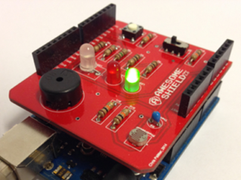

 This tutorial will teach you how to write actual code! By the end, you'll be able to get your Arduino to control a part on your Awesome Shield. You'll turn on a light using the magic of computer code.
This is an Arduino sketch. Take a glance to see what it looks like, but don't worry about the details. You'll learn about what each of the parts of the sketch do a little further along in this tutorial.
Meet the Code Boxes: You're going to see code in two formats. Boxes like the one above that have buttons at the top, a grey column on the left, and a white background are whole sketches. You can click 'Clone & Edit' to open these yourself in codebender.
Smaller grey boxes, like the ones below, show your little bits of code. They are small parts of a sketch.
You'll notice two lines at the very top:
#include <Awesome.h>
Awesome awesome;The first line tells codebender to include the Awesome Shield Library with your sketch when it sends your sketch to the Arduino. That way when you tell the Arduino to use the Awesome Shield components, it can look in the library for instructions. The next line tells the Arduino that you're using your Awesome Shield.
Then you'll see:
void setup ()
{
}
void loop ()
{
// your code is going to go right here
}Don't worry about the details here, for now. All you need to know is you're going to write some code right where it says // your code is going to go right here. You'll replace this line with your code. The Arduino will follow the instructions in the code you write there.
Now you're going to start writing code. Open the example sketch by clicking here, or click the “Clone & Edit†button in the top bar of the sketch, above. This will open the sketch in codebender in a new window, or tab. Then you'll be able to edit the example sketch yourself.
You're going to write a line of code that tells the Arduino to turn on the green LED on the Awesome Shield. First you need to tell the Arduino that it's going to use the Awesome Shield. You do this by typing:
awesome.Next, you need to tell the Arduino which part on the shield you want it to use. You do this by adding the name of the component, like this:
awesome.greenLED.Next you need to tell the Arduino what you want it do do with that component. You do this by adding a function, like this:
awesome.greenLED.turnOn();Notice that the function has a set of round brackets and a semicolon after it. That tells the Arduino that turnOn() is a function, and not some other kind of code.
A function follows a set of instructions to finish a task. The function we wrote above will turn on the green LED on the Awesome Shield. The instructions this function will follow are written in the Awesome Shield Library. You'll learn to write your own functions later on, in another tutorial.
The complete sketch that turns on the LED is below.